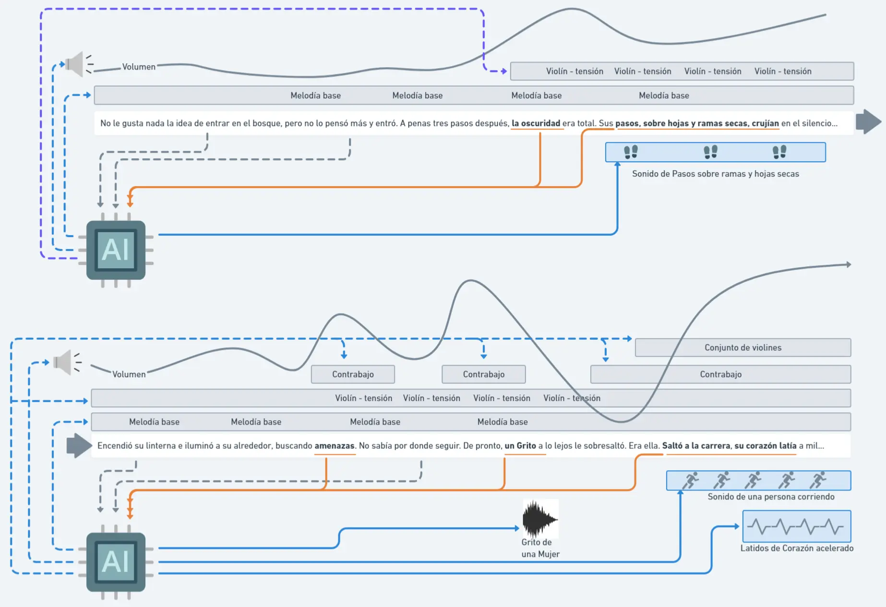
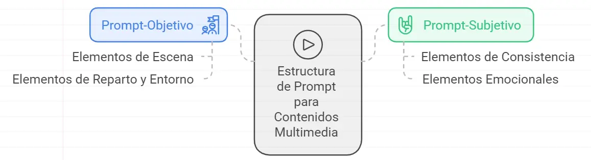
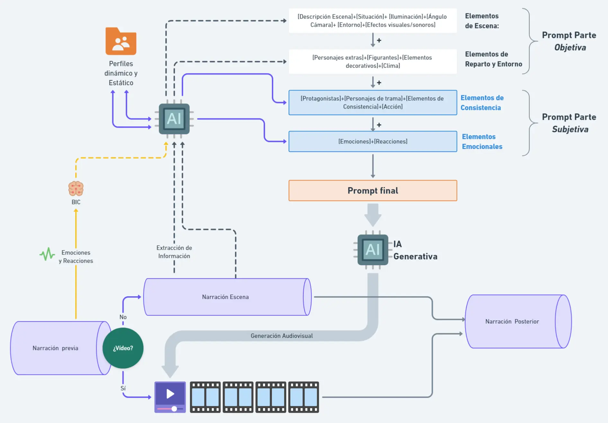

El Producto / Generación Multimedia con IA
Generación Multimedia
✨ La IA como Generador de Contenidos Multimedia
Como ya hemos mencionado, el componente multimedia del Selbook es un valor extra esencial. Para su gestión, se habilitarán ciertos pasajes de la historia donde el usuario, si así lo decide, podrá elegir si quiere seguir leyendo o quiere usar otra alternativa. Las Opciones serán:
🎵 Otros aspectos Multimedia

🛠️ Ingeniería de Prompting: Sobre la Consistencia y Coherencia de los Contenidos Multimedia
Hemos resaltado la importancia de la Consistencia y Coherencia de las escenas generadas por la IA, pero también es esencial dejar clara la importancia de tal consistencia entre los diferentes contenidos multimedia. Es decir, si en una imagen se muestra un personaje, ese personaje deberá seguir siendo igual si, más adelante, el usuario decide ver otra imagen o visualizar un vídeo. No podría ver dos representaciones diferentes.
Por esta razón, debemos tener en cuenta que la estructura de Prompt para la generación de contenidos Multimedia consistirá en dos partes:
Prompt – Objetivo
Esta parte del Prompt se denomina “Objetiva” porque no está sujeta a las “emociones” del usuario ni a “recreaciones" previas. Será la información descriptiva extraída del texto que narra la escena o pasaje. Esta parte del Prompt se subdividiría en 2 secciones:
- Elementos de Escena: [Descripción de la escena]+[Situación]+[iluminación]+[Ángulo Cámara]+[Efectos visuales]+[Efectos Sonoros]
- Elementos de Reparto y Entorno: [Personajes extras]+[Figurantes]+[Elementos decorativos]+[Clima]
Prompt – Subjetivo
Son los elementos que están sujetos a la interpretación de las emociones y reacciones del Usuario, tanto presentes como pasadas. Esto significa que las anteriores recreaciones han sido "almacenadas” para tener una consistencia en cuanto a personajes y escenarios. Esta parte del Prompt también se subdivide en 2 secciones:
- Elementos de Consistencia: [Protagonistas]+[Personajes de trama]+[Elementos de Consistencia]+[Acción]
- Elementos Emocionales: [Emociones de lectura]+[Reacciones del lector]+[Emociones de Personajes]+[Sensaciones de Ambientación]

Ejemplo:
Imaginemos el siguiente texto:
Allí estaba otra vez. Con un inesperado giro, el hombre misterioso se metió en el callejón. Tom salió corriendo tras él. Escuchaba sus zancadas, veía su gabardina, incluso le pareció escuchar una risa perversa, pero la oscuridad de la noche y la ineficaz luz de una farola temblorosa del callejón, que se difuminaba en la neblina, no le permitían distinguirle. La sombra era ágil, saltaba entre los cubos de basura que iba tirando a su paso. El corazón le latía a mil. En verdad, no sabía que iba a hacer si le alcanzaba, tenía más miedo que intriga, corría por instinto, sólo sabía que debía cazarlo si quería desvelar el misterio. Un transeúnte se cruzó en su camino, la sombra le gritó como un loco y asustado se tiró al suelo...
En muchos casos, algunos conceptos estarán compartidos o mezclados, pero veamos por partes cómo quedaría:
Elementos de Escena:
- + Un Hombre corriendo por un callejón perseguido por el protagonista
- + Cámara primera persona, altura ojos.
- + Sonido de pasos corriendo
- + Risa perversa
- + Noche oscura con luz débil de farola
- + Grito de un loco
- + Sonido de cubos de basura al tropezar
Elementos de Reparto y Entorno
- + Farola vieja y temblorosa
- + Cubos de basura
- + Neblina
- + Hombre cruza por el callejón.
- + Del susto, cae al suelo
Elementos de Consistencia
- + [Descripción almacenada del Hombre misterioso]
- + Corre delante del protagonista. Carrera frenética con risa perversa. Huye sorteando obstáculos y derribando cubos de basura.
- + Asusta a transeúnte gritándole al pasar junto a él.
Elementos Emocionales
- + [Emociones recogidas de la lectura del usuario]
- + Tom está nervioso. Tiene miedo. Ansiedad. Intriga.
- + El ambiente es tenso. Misterioso.
Con toda esta información, Sely elaboraría un Prompt lo más detallado y completo para que la IA Generativa creara el vídeo.
Diagrama:
